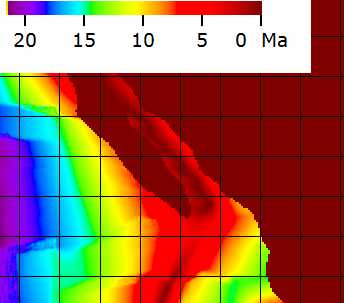
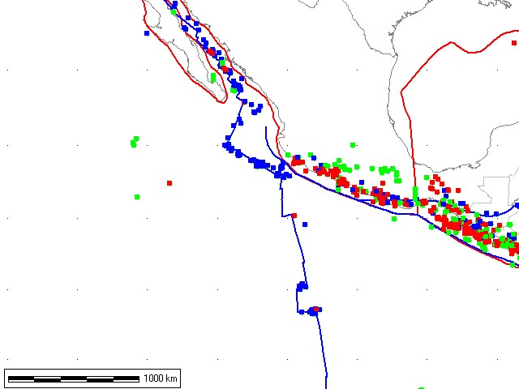
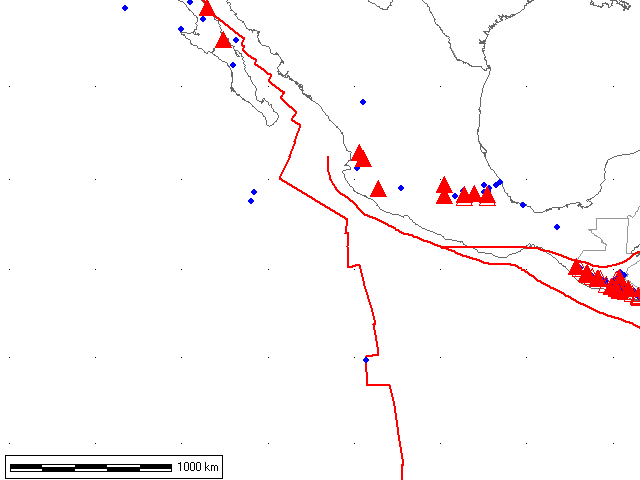
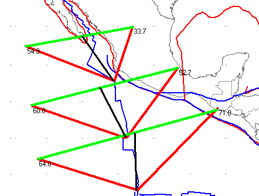

- Normal faults
- Thrust faults
- Strike slip faults

Red triangles are stratovolcanoes; all others small blue diamonds.
Plate boundaries in red; note that the three boundaries do not come together to form a triple junction. This is a reflection on the digitized boundaries rather than nature.

Plate boundaries and volcanoes overlaid.
Note the arcs to the east of the ridge south of the triple junction, showing rapid increases in the spreading rate moving southward along the East Pacific Rise, and proximity to the Euler pole at the north end.

NUVEL model velocities calculated at three points, in red. The green lines show the relative motion between the plates, with the black line pointing to the spots where the calculations are valid at the tails of the vectors for each platemotion.
Note the southward increase in velocity, from 65 mm/yr (full rate) to 92 mm/yr in the middle and 110 mm/yr at the Galapagos triple junction. These figures are calculated by scaling the computed green relative vectors to one of the red vectors or looking at the scale bar the program can compute.